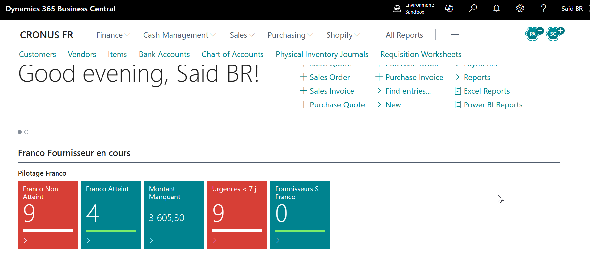

Table des matièresTable of contents
- Présentation généraleOverview
- Concepts clésKey concepts
- ParamétrageConfigurationSetup
- Gestion sur la Commande AchatPurchase Order
- Feuille de Demande d'AchatRequisition Worksheet
- L'Optimiseur FrancoFranco Optimizer
- Tableau de bordDashboardActivity Dashboard
- Règles de prioritéPriority Rules
- Référence rapideQuick referenceQuick Reference
Extension Business Central · WALYCONSEILBusiness Central Extension · WALYCONSEIL
Documentation —Documentation —
Franco Fournisseur
Section 01Section 01Section 01Section 01Section 01Section 01Section 01Section 01
Présentation générale
L'extension Franco Fournisseur permet de gérer et piloter les seuils de franchise de port (franco) par fournisseur directement dans Business Central.
Sans cet outil, le suivi du franco est manuel, dispersé dans les commandes, et souvent découvert trop tard — après le lancement, quand il n'est plus possible d'ajuster facilement.
L'extension intervient à deux niveaux du processus achat :
- Commande achat : affichage en temps réel du statut franco sur chaque commande, et application automatique de frais de port si le franco n'est pas atteint au lancement.
- Feuille de demande d'achat : analyse consolidée par groupe Fournisseur / Magasin / Date de réception, avec un outil de suggestion pour atteindre le franco avant de lancer les commandes.

Capture d'écran à ajouterScreenshot placeholder
Vue d'ensemble — Extension Franco Fournisseur sur Business Central
Page d'accueil BC avec la pile d'activité Franco visibleBC homepage with Franco Fournisseur Activity Stack visible